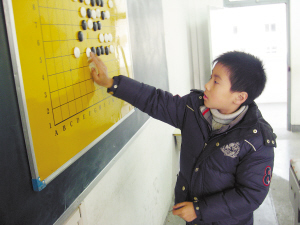

2011年元旦在宁波得了浙江青少年五子棋锦标赛少年组冠军后的一次采访

姓名：戴宇轩
学校：椒江育才小学
年级：四年级
特长：五子棋、围棋、国际象棋、乒乓
获奖情况：浙江省五子棋锦标赛儿童组冠军，浙江省五子棋公开赛青少年组冠军等
有一个棋迷爸爸，戴宇轩从幼儿园开始，就在棋盘上玩耍。纵横交错的棋盘，黑白色的棋子，他小脑袋瓜里一直很奇怪，就这些东西，怎么就能让爸爸枯坐上半天。有一天，爸爸忽然说，“一起玩吧！”从此，他就走入了棋类世界，错综复杂、精彩纷呈。
从象棋到围棋，再到五子棋，得过多次冠军，也数次失手过，他都没放在心上。在他的世界里，比赛也好，学习也好，都是一种轻松逗趣的玩乐。习惯执黑棋的他，只是一个边走边玩的小棋手。
一定要赢过爸爸
戴宇轩的爸爸是个棋迷，从小耳濡目染的他对棋类有着特殊的感情。爸爸心情好的时候，抱着宇轩告诉他象棋盘里帝王将相的厮杀，围棋盘中优雅淡定的气度，他不懂，但听得津津有味。有一天，爸爸忽然想和儿子下一盘棋，儿子输得很惨，有所不服，说一定要赢爸爸。爸爸干脆将他送去棋社学棋。
先学的是围棋，戴宇轩兴趣盎然，总是拖着爸爸下棋。老是输，不甘心，就琢磨爸爸的下棋思路，慢慢地有所领悟。渐渐地，爸爸有所不支，现在，就算是让爸爸3子，他也能赢得游刃有余。或许是“一定要赢爸爸”的信念在，戴宇轩进步很快。参加过几次校内或者全市的比赛，都拿到不错的成绩。经常在网上下，也鲜少棋逢对手。“可能碰到的都是水平普通的，高手都还没对上过。”戴宇轩谦虚地说。
执黑棋的小棋手
五子棋向来是民间非正规的棋类项目，到2006年，才正式立项，制定了严格的规则，属围棋类下的子项目。戴宇轩接触到正规的五子棋的时候，已经是2009年了。“以前也和同学们玩过，觉得很蛮有趣。”戴宇轩说。
上五子棋课的老师不是教师出身，所以很容易和学生们玩在一起，就像朋友一样，将规则和技讲得浅显易懂，戴宇轩学得很快。上课很喜欢和老师互动，下课就在网上到处找人下，吸收大家的经验。值得一提的是，宇轩爸爸为了表示支持，也和他一起学习五子棋，一路伴随成长。
“下五子棋，只要借到一点优势，我就会很高兴。比赛的时候，抓到对方‘禁手’就会赢。”戴宇轩说起经验头头是道。他习惯执黑棋，新规则里，下黑棋的人，可以先下三棋，但是下白棋的人，有“换棋”的决定权。那三棋很关键，下得很有优势，就会被白棋换走，成了自己的劣势；下得毫无优势，也不利于展开手脚。所以要掌握好平衡，既没有明显优势，也没有明显劣势。对于这个“平衡”，戴宇轩很有一套。
2009年的时候，成为浙江省五子棋锦标赛儿童组冠军。2010年，成为浙江省五子棋锦标赛青少年组的冠军。
也有失手的时候，有一次下棋，让他印象很深刻。明明看起来已经是自己的全面优势了，他高兴地“耶、耶”乱叫，一不留神就让对方抓到“禁手”，输了比赛。他痛定思痛，总结了经验，吸取了教训，再也不敢轻敌。说起自己下棋的思路，他概括为会把不优势的局面扳到对自己有利的局面。所谓“置之死地而后生”，让对方轻敌，再悄悄“干掉”他。这也是从那次的比赛中得来的教训。
表示关注!棋坛大小戴!!
臭小子最近棋越来越猛了，前天和他下了一盘，做棋十分了得。